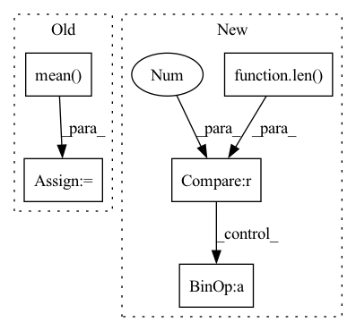

Pattern ID :3106
Before Change
if "conv_layer" in self.custom_config["model_arch_args"]:
x = inputs.reshape(-1, self.raw_state_dim[0], self.raw_state_dim[1], self.raw_state_dim[2]).permute(0, 3, 1, 2)
x = self.encoder(x)
x = torch.mean( x, (2, 3))
x = x.reshape(inputs.shape[0], -1)
else:
x = self.encoder(inputs)
h = hidden_state[0].reshape(-1, self.hidden_state_size) // fake a hidden state no useAfter Change
@override(ModelV2)
def forward(self, input_dict, hidden_state, seq_lens):
inputs = input_dict["obs_flat"].float()
if len(self.full_obs_space.shape) == 3 : // 3D
inputs = inputs.reshape((-1,) + self.full_obs_space.shape)
x = self.encoder(inputs)
h = hidden_state[0].reshape(-1, self.hidden_state_size) // fake a hidden state no use
x = self.mlp(x)In pattern: SUPERPATTERN
Frequency: 3
Non-data size: 5
Instances Fragment ID: 10168351
Project Name: replicable-marl/marllib
Commit Name: b8e61fa5031b72cb8ce2321212fe3908f3468b83
Time: 2023-03-01
Author: hhhusiyi@163.com
File Name: marllib/marl/models/zoo/mlp/jointQ_mlp.py
M Class Name: JointQ_MLP
N Class Name: JointQ_MLP
M Method Name: forward(4)
N Method Name: forward(4)
M Parent Class: nn.Module,TorchModelV2
N Parent Class: nn.Module,TorchModelV2
M File Name: marllib/marl/models/zoo/mlp/jointQ_mlp.py
N File Name: marllib/marl/models/zoo/mlp/jointQ_mlp.py
M Start Line: 104
M End Line: 111
N Start Line: 59
N End Line: 62
Before Change
x = inputs.reshape(-1, self.raw_state_dim[0], self.raw_state_dim[1], self.raw_state_dim[2]).permute(0, 3, 1,
2)
x = self.encoder(x)
x = torch.mean( x, (2, 3))
x = x.reshape(inputs.shape[0], -1)
else:
x = self.encoder(inputs)
h_in = hidden_state[0].reshape(-1, self.hidden_state_size)After Change
@override(ModelV2)
def forward(self, input_dict, hidden_state, seq_lens):
inputs = input_dict["obs_flat"].float()
if len(self.full_obs_space.shape) == 3 : // 3D
inputs = inputs.reshape((-1,) + self.full_obs_space.shape)
x = self.encoder(inputs)
h_in = hidden_state[0].reshape(-1, self.hidden_state_size)
h = self.rnn(x, h_in) Fragment ID: 10168355
Project Name: replicable-marl/marllib
Commit Name: b8e61fa5031b72cb8ce2321212fe3908f3468b83
Time: 2023-03-01
Author: hhhusiyi@163.com
File Name: marllib/marl/models/zoo/rnn/jointQ_rnn.py
M Class Name: JointQ_RNN
N Class Name: JointQ_RNN
M Method Name: forward(4)
N Method Name: forward(4)
M Parent Class: nn.Module,TorchModelV2
N Parent Class: nn.Module,TorchModelV2
M File Name: marllib/marl/models/zoo/rnn/jointQ_rnn.py
N File Name: marllib/marl/models/zoo/rnn/jointQ_rnn.py
M Start Line: 104
M End Line: 112
N Start Line: 57
N End Line: 60
Before Change
reg_loss = angle_loss + ciou_loss[obj_mask]
with torch.no_grad():
reg_const = iou_const / reg_loss
reg_loss = (reg_loss * reg_const).mean()
// Focal Loss for object"s prediction
FOCAL = FocalLoss(reduction=self.reduction)
conf_loss = (After Change
reg_loss, conf_loss, cls_loss = torch.zeros(1, device=device), torch.zeros(1, device=device), torch.zeros(1, device=device)
FOCAL = FocalLoss(reduction=self.reduction)
if len(target) > 0 :
// Reg Loss for bounding box prediction
iou_const = skew_iou[obj_mask]
angle_loss = F.smooth_l1_loss(pred_a[obj_mask], ta[obj_mask], reduction="none")
reg_vector = angle_loss + ciou_loss[obj_mask]
with torch.no_grad():
reg_magnitude = iou_const / reg_vector
reg_loss += (reg_magnitude * reg_vector).mean()
// Focal Loss for object"s prediction
conf_loss += FOCAL(pred_conf[obj_mask], tconf[obj_mask]) Fragment ID: 10168354
Project Name: kunnnnethan/r-yolov4
Commit Name: 19b19f97bc8825463f3fac05fc770e7fe7ec6464
Time: 2022-01-12
Author: ethanwu1127@gmail.com
File Name: model/yololayer.py
M Class Name: YoloLayer
N Class Name: YoloLayer
M Method Name: forward(3)
N Method Name: forward(3)
M Parent Class: nn.Module
N Parent Class: nn.Module
M File Name: model/yololayer.py
N File Name: model/yololayer.py
M Start Line: 146
M End Line: 203
N Start Line: 146
N End Line: 204